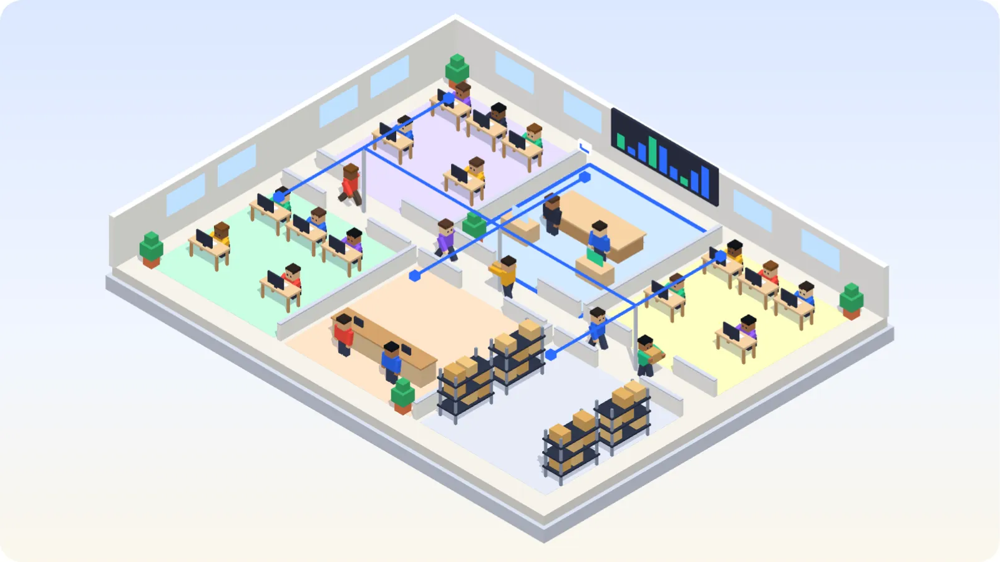
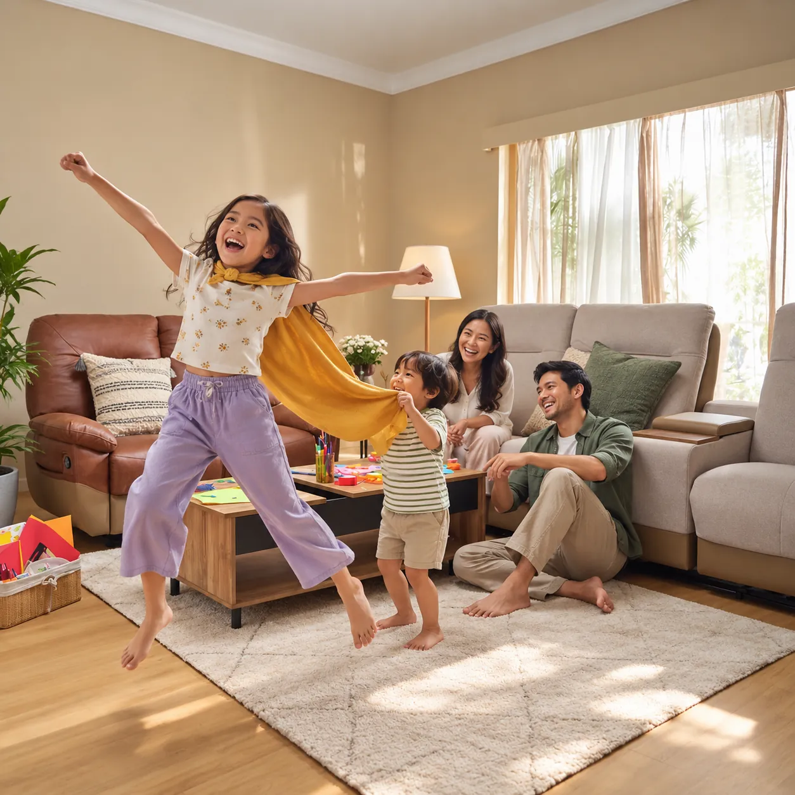
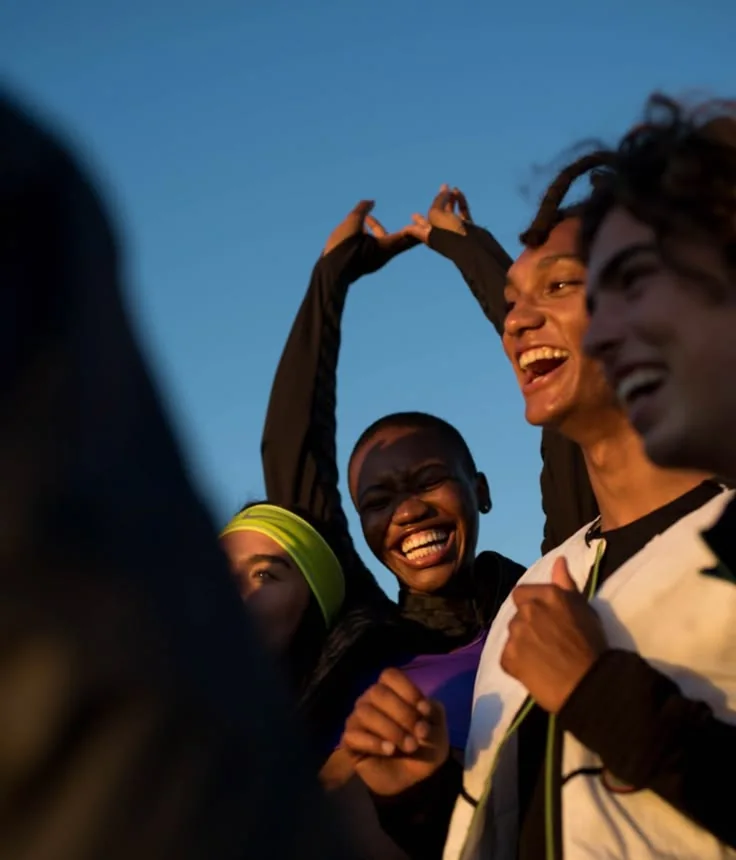

Cloud
Toko sudah buka. Anda masih sarapan.
Penjualan, stok, dan laporan tersimpan di cloud dan terbuka dari ponsel mana pun.
Komputasi cloud dan AI yang membuat kerja jauh lebih efisien dan terkontrol, pelanggan cepat direspons, dan fraud tercegah.
Anak-anak kita akan tumbuh di dunia yang berjalan dengan perangkat lunak. Usaha yang kita bangun hari ini harus siap untuk dunia itu. Singkrona menyatukan penjualan, stok, keuangan, dan orang dalam satu sistem yang berpikir bersama Anda.
Kantor Anda, otomatis
Setiap divisi bekerja dalam satu sistem. Satu pesanan masuk, lalu pekerjaan berpindah sendiri dari meja ke meja, tanpa ada yang mengetik ulang data atau mengejar langkah berikutnya.

Ilustrasi · geser untuk memutarPekerjaan berulang berjalan otomatis, sehingga tim memakai waktunya untuk hal yang penting.
Semua divisi memakai data yang sama. Setiap langkah tercatat dan terlihat dari satu layar.
AI dan tim menjawab dari informasi yang sama, termasuk setelah toko tutup.
Yang keluar dari pola normal ditandai sebelum menjadi kerugian.
Lihat simulasinya →Saat sistem menjaga usaha, Anda bisa berada di tempat lain.
Cloud
Penjualan, stok, dan laporan tersimpan di cloud dan terbuka dari ponsel mana pun.
AI
Agen yang mengenal produk Anda bisa melayani, menindaklanjuti, dan mencari pembeli baru.
Kontrol
Anti-fraud
Satu void itu wajar. Enam void dari kasir yang sama menjelang tutup adalah pola. AI mempelajari ritme normal usaha Anda, lalu menandai yang menyimpang.
Mencatat penjualan secara real time, terhubung ke stok dan laporan keuangan.
Melacak stok masuk dan keluar, mencegah kehabisan dan kelebihan barang.
Mengelola arus kas, laba rugi, pajak, dan pembukuan secara otomatis.
Menyimpan riwayat pelanggan dan menaikkan retensi lewat tindak lanjut yang tepat.
Data karyawan, absensi, gaji, cuti, dan kinerja dalam satu tempat.
Menyatukan keuangan, stok, produksi, dan SDM dalam satu platform pusat.
Layanan pelanggan AI dengan pengetahuan produk penuh yang bisa menjangkau pelanggan baru.
Mengatur aliran barang dari pemasok sampai ke pelanggan secara efisien.
Setiap project dimulai dari mendengar masalah. Kami mencari solusinya, lalu mewujudkannya dalam bentuk branding, aplikasi, dan sistem.
“Perhatian mereka pada detail dan komitmen pada kualitas sangat menonjol. Kami sudah merekomendasikan mereka kepada yang lain.”
Pelanggan terdahulu

Bagaimana kami menciptakan
Kenapa stok selisih? Kenapa kasir pulang larut? Kenapa laporan baru jadi tanggal 5? Kami terus bertanya sampai akar masalahnya terlihat.
Perangkat lunak adalah hal terakhir yang kami pikirkan. Kami lebih dulu melihat cara tim Anda bekerja, ke mana uang bergerak, dan di mana ia tersangkut. Setelah itu baru kami menulis kode.
Setiap langkah berakhir dengan sesuatu yang bisa Anda lihat dan periksa.
Kami duduk bersama pemilik, kasir, dan staf gudang, lalu mencatat apa yang memperlambat mereka.
Anda dapat: daftar masalah nyataKami menggambar aliran pesanan, stok, dan uang hari ini, lalu menandai titik masuk kesalahan dan fraud.
Anda dapat: peta operasionalKami merancang layar bersama orang yang akan memakainya, dan memilih arsitektur yang sesuai beban kerja.
Anda dapat: prototipe yang bisa dicobaKami membangun dalam siklus pendek, sehingga Anda melihat perangkat lunak yang berjalan sejak awal dan bisa mengubah arah.
Anda dapat: rilis berkala yang berjalanKami mencoba merusaknya: lalu lintas padat, input salah, dan upaya mengakali sistem.
Anda dapat: laporan pengujianKami meluncurkan, melatih tim Anda, dan memantau angka. Sistem terus membaik dengan data nyata.
Anda dapat: sistem yang terus berkembangKalau kasir tidak bisa memakainya saat antrean panjang, desainnya belum selesai.
Setiap detik menunggu adalah milik staf dan pelanggan Anda. Kami menjaganya.
Hak akses, enkripsi, dan jejak audit dipasang sejak awal, karena sulit ditambahkan belakangan.
Satu outlet hari ini, dua puluh nanti. Sistem harus ikut tumbuh tanpa dibangun ulang.
Titik-titik ini mulai dari irama acak, lalu saling menyesuaikan. Sistem kami melakukan hal yang sama pada penjualan, stok, keuangan, dan orang.
Komputasi cloud
Cloud berarti sistem Anda berjalan di pusat data yang dibuat khusus, menggantikan komputer di ruang belakang. Sistem tetap menyala saat listrik toko padam.
Kapasitas naik saat jam sibuk dan turun saat sepi, sehingga Anda membayar sesuai pemakaian.
Setiap cabang melihat angka yang sama pada saat yang sama.
Data disalin berkala, sehingga perangkat rusak tidak berarti catatan hilang.
Artificial intelligence
Kerja lebih efisien, proses lebih terkontrol, dan pelanggan lebih cepat direspons.
Menjawab pertanyaan sepanjang hari dengan pengetahuan produk Anda.
Menyarankan apa yang kemungkinan dibeli pelanggan berikutnya.
Membaca penjualan lalu untuk memperkirakan permintaan sebelum Anda memesan stok.
Machine learning menemukan transaksi yang keluar dari pola biasa.
Mengambil alih pekerjaan mengetik, menyalin, dan mencocokkan yang berulang.
Mengubah faktur dan catatan kertas menjadi data yang bisa dicari.
Pencegahan fraud
Setiap penjualan, void, refund, dan pergerakan stok dicatat.
Kejadian dibandingkan dengan pola biasa untuk outlet, orang, dan jam itu.
Aturan dan machine learning memberi skor risiko.
Skor tinggi menahan tindakan dan langsung sampai ke manajer.
Keputusan dan alasannya tersimpan dalam jejak yang tidak bisa diubah.
Kami memakai kekuatan Rust untuk membangun sistem cloud di level baru.
Mozilla, Discord, Dropbox, Microsoft, dan Cloudflare memercayakan sistem yang melayani jutaan pengguna pada bahasa ini. Bagi usaha yang tidak boleh berhenti, sistem keuangan yang menghitung setiap milidetik, dan deteksi fraud yang harus secepat kilat, Rust menjaga sistem tetap cepat, stabil, dan tangguh di lalu lintas terpadat.
Rust, Golang, Node.js, Python, Java, PHP
React.js, Next.js, Vue.js, Angular
Flutter, React Native, Android, iOS
PostgreSQL, MySQL, MongoDB, Redis, Firebase, Supabase
PT Singkrona Digital Indonesia
Kami perusahaan teknologi yang membuat sistem cloud, AI, dan aplikasi untuk usaha yang ingin bertahan lama.

Setiap pemilik usaha yang kami temui menginginkan hal yang sama: tahu apa yang benar-benar terjadi, percaya pada angkanya, dan meninggalkan sesuatu yang baik. Kami membangun teknologi yang memungkinkan itu.
Dev by Singkrona
Jln. Sunset Road, Gang Made,
Seminyak, Kuta, Bali
+62 818-0800-1811
mail@singkrona.com
Lyxvo Security
Lyxvo WAF memblokir pemindai, serangan injeksi, dan banjir trafik di depan pintu. Lyxvo Captcha menahan bot di formulir tanpa teka-teki dan tanpa pelacakan.
Mengenali SQL injection, XSS, path traversal, command injection, SSRF, dan lainnya, dicocokkan pada URL dan body yang sudah didekode.
Mengenali sqlmap, Nikto, Nuclei, ZAP, Acunetix, dan 40 alat lain. Upaya mencari .env, .git, backup, dan panel CMS langsung terperangkap.
Setiap temuan menaikkan skor IP. Payload nyata langsung diblokir, sinyal lemah terakumulasi dalam 15 menit, dan banjir trafik memicu blokir satu jam.
Daftar izin dan blokir, blokir negara, batas permintaan per menit, dan mode monitor yang mencatat tanpa memblokir.
Browser pengunjung menyelesaikan proof-of-work kecil dalam sekitar satu detik. Tanpa teka-teki gambar, cookie, atau pelacakan pihak ketiga.
Setiap permintaan yang diblokir beserta IP, negara, path, dan jenis serangan, ditambah serangan per hari, penyerang teratas, dan buka blokir sekali klik.
Daftarkan domain untuk mendapat site key publik dan secret key khusus server.
Server mengirim IP, metode, URL, dan header setiap permintaan, lalu menolak yang dijawab block.
POST /api/security/checkPasang widget di formulir, lalu verifikasi tokennya di server dengan secret key.
captcha.jsLihat dulu apa yang akan diblokir, lalu beralih ke mode blokir.
Kalau pemeriksaan tidak menjawab dalam batas waktu singkat, permintaan tetap diteruskan, sehingga situs tidak berhenti.
Token captcha kedaluwarsa setelah 5 menit.
Node, Next.js, PHP, Laravel, WordPress, Python, Go, Ruby, Cloudflare Workers